Projetos
-
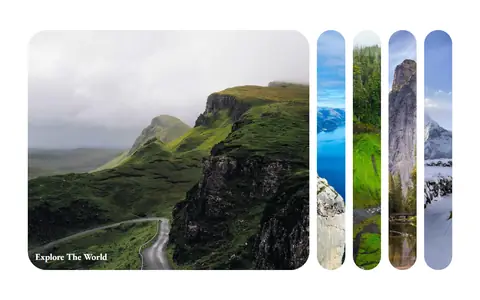
Expanding Cards
Painéis de imagem que se expandem ao clicar.
Animação Código de Expanding Cards no GitHub -
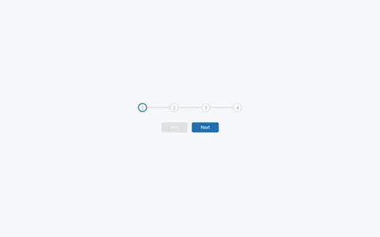
Progress Steps
Indicador de etapas com botões de avançar e voltar.
Componente Código de Progress Steps no GitHub -
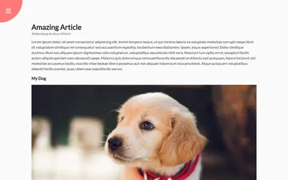
Rotating Navigation
Página que gira para revelar o menu.
Navegação Código de Rotating Navigation no GitHub -
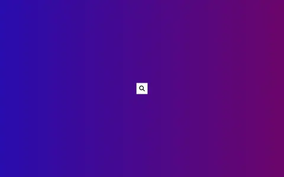
Hidden Search
Campo de busca que se abre a partir de um ícone.
Formulário Código de Hidden Search no GitHub -
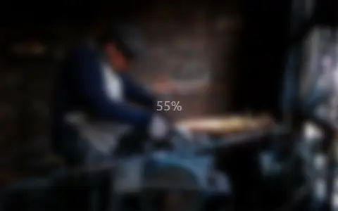
Blurry Loading
Imagem que sai do desfoque enquanto um contador carrega.
Animação Código de Blurry Loading no GitHub -
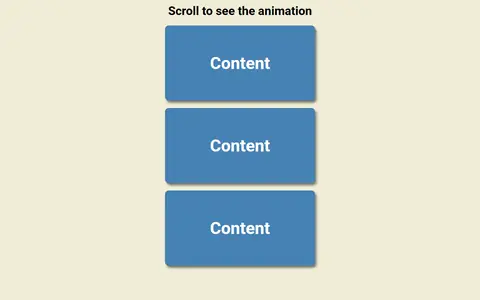
Scroll Animation
Caixas que entram na tela conforme a rolagem.
Animação Código de Scroll Animation no GitHub -
Split Landing Page
Landing page dividida que cresce para o lado do mouse.
-
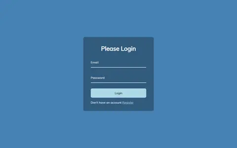
Form Input Wave
Formulário de login com rótulos animados letra a letra.
Formulário Código de Form Input Wave no GitHub -
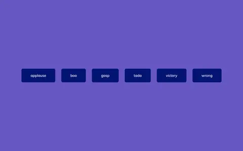
Sound Board
Botões que tocam efeitos sonoros.
Interação Código de Sound Board no GitHub -
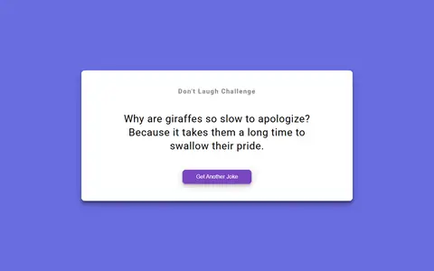
Dad Jokes
Gerador de piadas consumindo a API icanhazdadjoke.
-
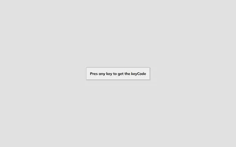
Event KeyCodes
Mostra key, keyCode e code de cada tecla pressionada.
Interação Código de Event KeyCodes no GitHub -
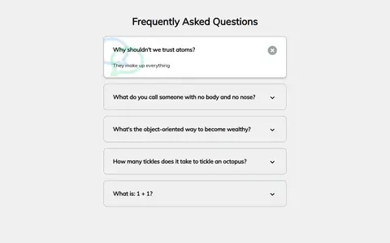
FAQ Collapse
Perguntas frequentes que abrem e fecham.
Componente Código de FAQ Collapse no GitHub -
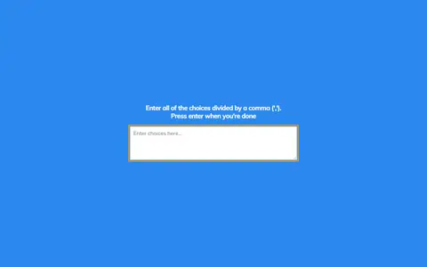
Random Choice Picker
Sorteia uma opção entre as digitadas.
Utilitário Código de Random Choice Picker no GitHub -
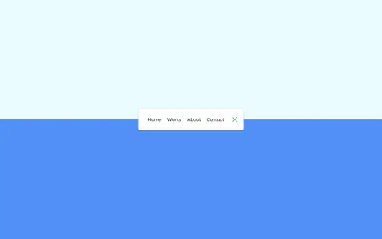
Animated Navigation
Barra de navegação que recolhe com animação.
Navegação Código de Animated Navigation no GitHub -
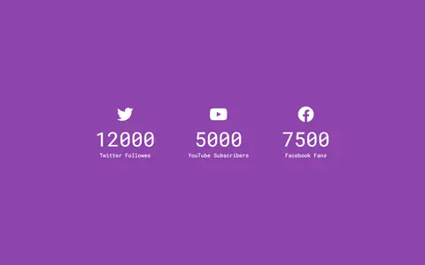
Incrementing Counter
Contadores de seguidores que sobem até o valor final.
-
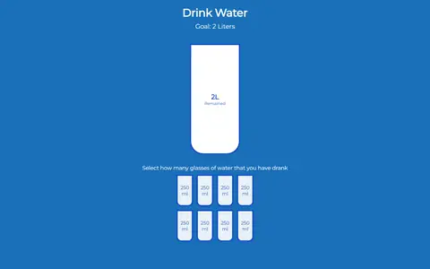
Drink Water
Controle de copos de água bebidos no dia.
Utilitário Código de Drink Water no GitHub -
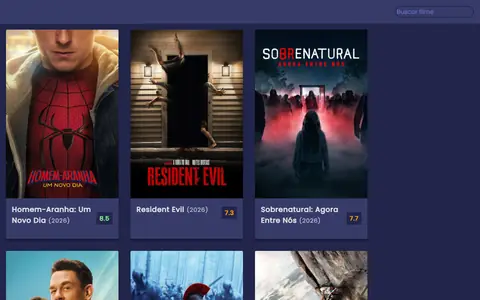
MelhoradoMovie App
Filmes populares e busca em português pela API do TMDB, com sinopse e nota.
-
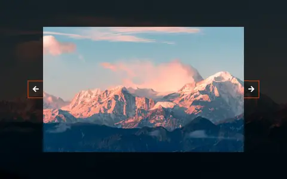
Background Slider
Carrossel com o fundo acompanhando o slide.
Componente Código de Background Slider no GitHub -
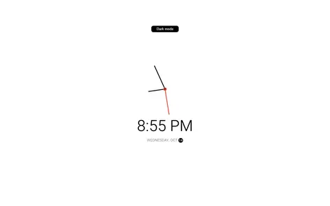
Theme Clock
Relógio analógico e digital com tema claro e escuro.
Utilitário Código de Theme Clock no GitHub -
Button Ripple Effect
Botão com onda a partir do ponto clicado.
-
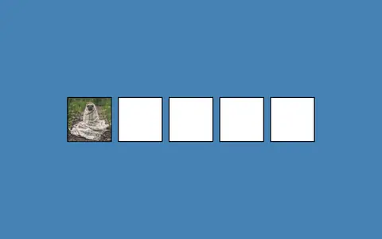
Drag N Drop
Imagem arrastável entre caixas.
Interação Código de Drag N Drop no GitHub -
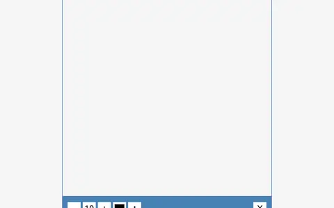
MelhoradoDrawing App
Desenho em canvas que funciona no toque e salva o resultado em PNG.
Interação Código de Drawing App no GitHub -
Kinetic Loader
Animação de carregamento feita só com CSS.
Animação Código de Kinetic Loader no GitHub -
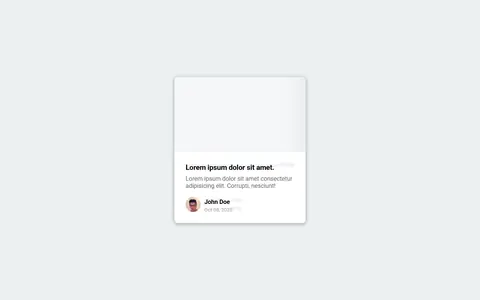
Content Placeholder
Esqueleto de carregamento antes do conteúdo aparecer.
Componente Código de Content Placeholder no GitHub -
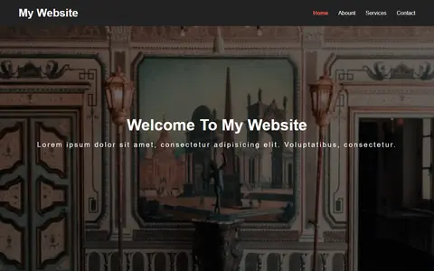
Sticky Navbar
Menu que muda de estilo ao rolar a página.
Navegação Código de Sticky Navbar no GitHub -
Vertical Slider
Slider em duas colunas que se movem em sentidos opostos.
Componente Código de Vertical Slider no GitHub -
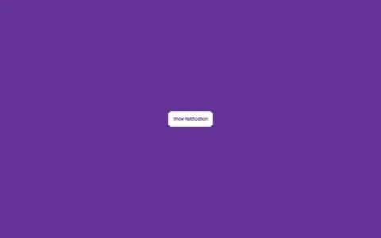
Toast Notification
Notificações que aparecem e somem sozinhas.
Componente Código de Toast Notification no GitHub -
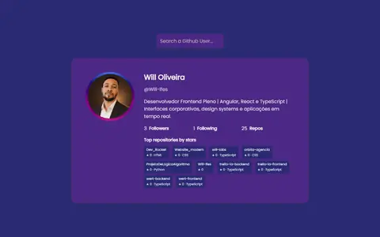
MelhoradoGitHub Profiles
Perfis do GitHub com os repositórios mais estrelados e tratamento de erros.
-
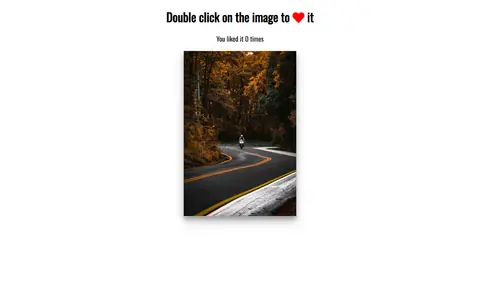
Double Click Heart
Curtida com coração ao clicar duas vezes na imagem.
Interação Código de Double Click Heart no GitHub -
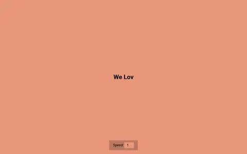
Auto Text Effect
Texto digitado automaticamente com velocidade ajustável.
Animação Código de Auto Text Effect no GitHub -
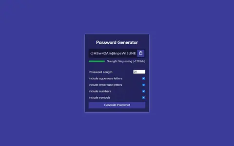
MelhoradoPassword Generator
Senhas com gerador criptográfico e medidor de força.
Utilitário Código de Password Generator no GitHub -
Good, Cheap, Fast
Três interruptores em que só dois ficam ligados.
Interação Código de Good, Cheap, Fast no GitHub -
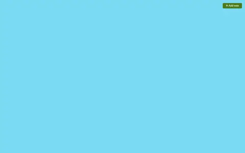
Notes App
Notas em Markdown salvas no navegador.
Utilitário Código de Notes App no GitHub -
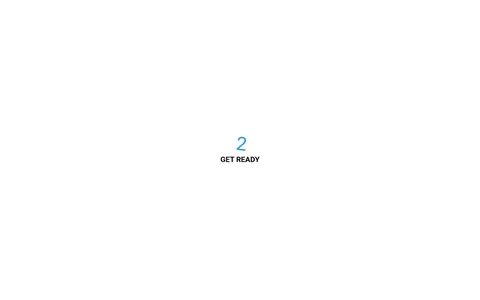
Animated Countdown
Contagem regressiva com números girando.
-
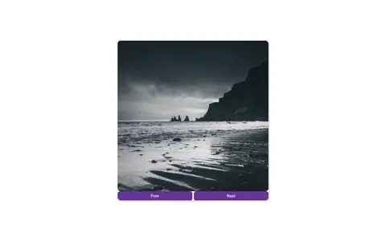
Image Carousel
Carrossel de imagens automático com setas.
Componente Código de Image Carousel no GitHub -
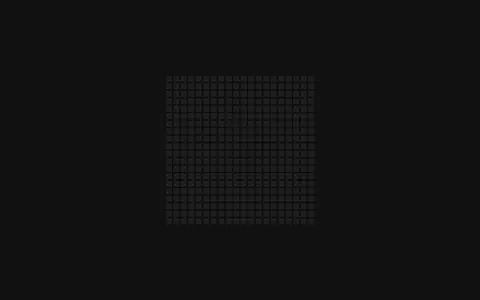
Hoverboard
Grade de quadrados que acendem ao passar o mouse.
Interação Código de Hoverboard no GitHub -
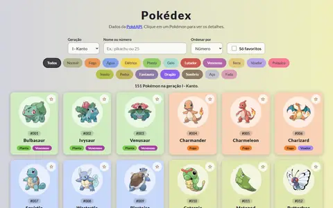
MelhoradoPokedex
Pokédex com gerações, filtro por tipo, favoritos e ficha completa de cada Pokémon.
-
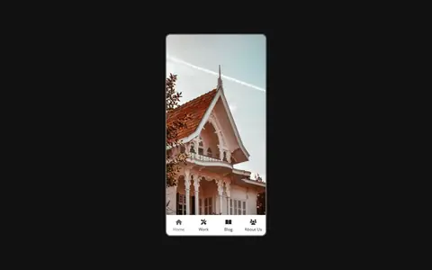
Mobile Tab Navigation
Navegação por abas imitando um aplicativo de celular.
-
Password Strength Background
Fundo que fica nítido conforme a senha fica forte.
-
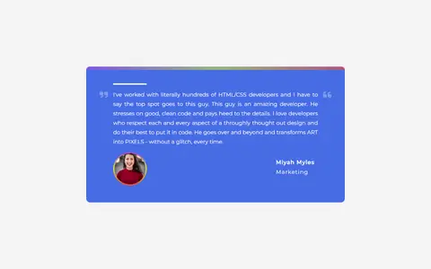
Testimonial Box Switcher
Depoimentos que se alternam com barra de progresso.
Componente Código de Testimonial Box Switcher no GitHub